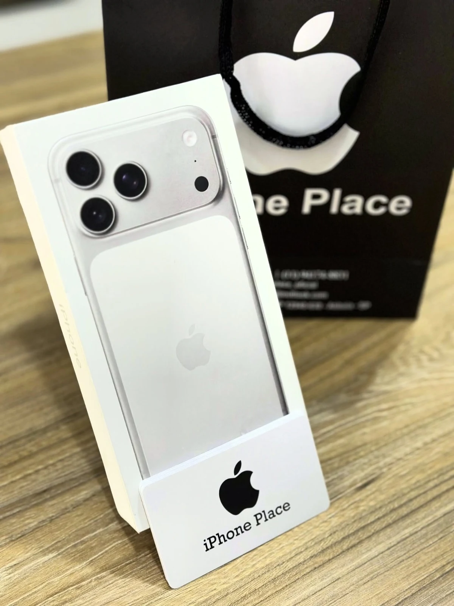
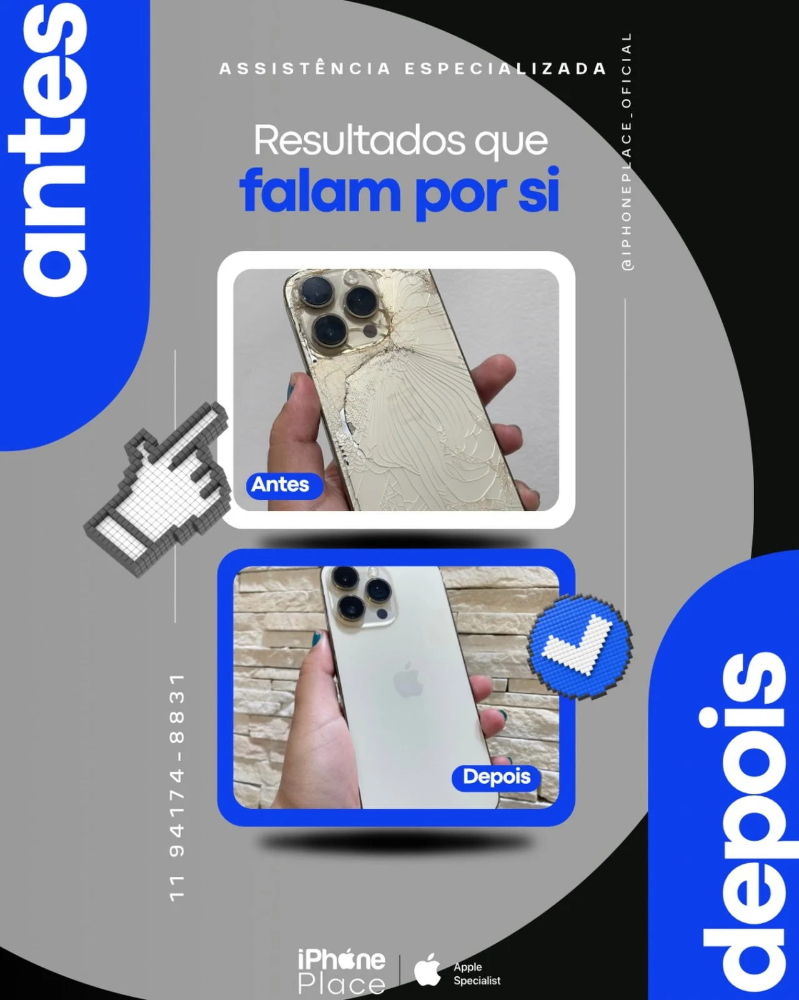

IPHONE PLACE / ATIBAIAPRODUTO + ATENDIMENTO
É sobre
a sua escolha.

iP / A SUA PRÓXIMA HISTÓRIA01 / Comece por aqui
Você traz as perguntas.
A gente conversa sobre
seu próximo iPhone.
Atendimento no Centro de Atibaia.
Conheça a loja na Rua José Inácio, 59.
02 / Do seu jeitoO próximo capítulo
O próximo capítulo
cabe na sua mão.
Fotos, trabalho, conversas, rotina. Cada pessoa usa o iPhone de um jeito.
Conte para a equipe o que você procura e consulte os modelos, cores e condições disponíveis na loja.
03 / Cuidado com o seu iPhoneJá tem o seu?
Já tem o seu?
Vamos cuidar.
Uma conversa também pode começar com uma tela, uma bateria ou um reparo.
Explique o que aconteceu com seu aparelho. A equipe orienta sobre avaliação, orçamento e possibilidades de assistência.
Conversar sobre assistênciaPrimeiro, entender. Depois, orientar.
Uma loja.
Pessoas.
Você.
Passe na iPhone Place, conheça os produtos e converse pessoalmente com a equipe.
- Encontre a gente
- Rua José Inácio, 59 · Centro
Atibaia — SP · 12940-630 - Telefone da loja
- (11) 2427-4071
- (11) 94174-8831
Uma boa conversa.
Uma escolha sua.